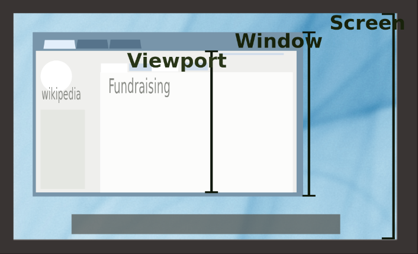
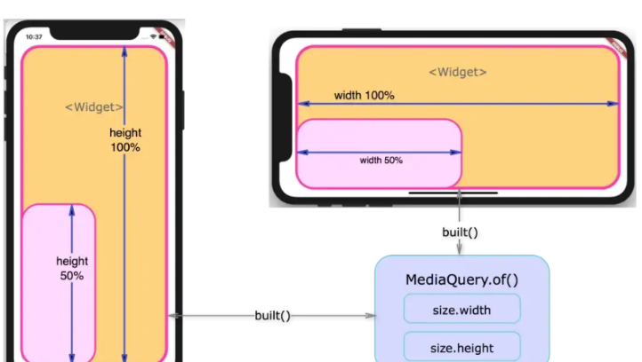
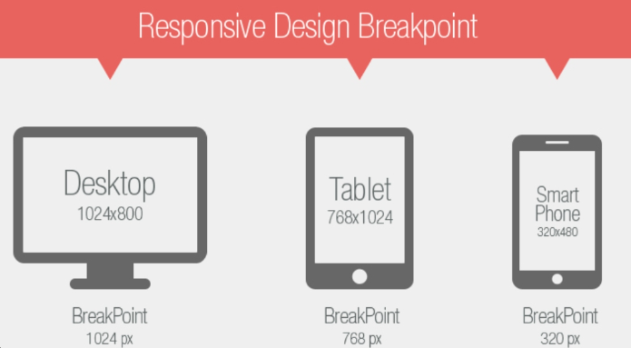

El diseño web responsivo se enfoca en crear sitios web que se adapten automáticamente a diferentes dispositivos y tamaños de pantalla. Esto significa que,independientemente del dispositivo que esté utilizando un usuario,el sitio web se mostrará de manera óptima y ofrecerá una experiencia de usuario satisfactoria.
Para lograr esto,se utilizan técnicas como media queries,diseño fluido y elementos flexibles. Estas técnicas permiten que el contenido y el diseño del sitio web se ajusten dinámicamente según el tamaño de la pantalla del dispositivo,lo que garantiza una visualización y navegación cómodas para el usuario.
Conceptos Clave del Diseño Web Responsivo
1. Viewport
El viewport es esencialmente el área visible de la ventana del navegador en la pantalla del dispositivo.es el espacio donde se muestra el contenido de un sitio web dentro del navegador. Para el diseño web responsivo,el viewport es fundamental porque determina cómo se muestra y se escala el contenido en diferentes dispositivos.
2. Media Query
Las media queries son una herramienta poderosa en CSS que permite aplicar estilos específicos basados en las características del dispositivo,como el ancho de la pantalla,la altura de la pantalla,la orientación del dispositivo (horizontal o vertical),la resolución del dispositivo y otras características relacionadas con el medio de visualización.
3. Breakpoints.
Los breakpoints son puntos específicos en el ancho de la pantalla donde se aplican cambios en el diseño de un sitio web utilizando media queries. Estos puntos marcan el límite en el que el diseño del sitio web necesita ajustarse para adaptarse a diferentes tamaños de pantalla y dispositivos.